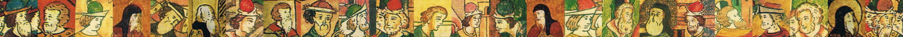
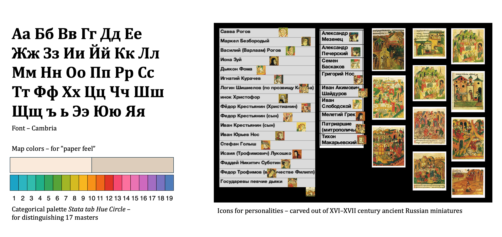
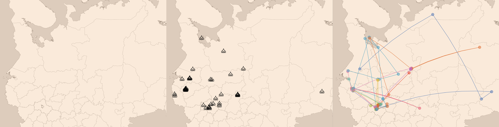

Geography of Ancient Russian Singing Centers

In September 2024, I've joined the Digital Humanities Center at ITMO University as a research intern.
One of the most exciting research projects conducted within the Center was initiated by a guild of master students with background in medieval music.
The project aims to explore applications of geographic information systems in studies of Russian musical art of XV–XVII century.
Proposed output of the project was a visualization of singing centers and influential personas in form of a web map,
which I got an opportunity to design and develop.
In close collaboration with the project lead, we analyzed and adapted the preformulated technical requirements to end up with
the most suitable combination of map layers, filtration system and appropriate design.
Luckily, I was given the creative freedom to choose development tools and to determine the final look of the webpage.
Design process

As for the technical part... For the longest time I've been dying to get my hands on the D3.js library – and this time I was finally able to do so.
Having witnessed its unmatched dataviz capabilities, it seems like there is no going back :)
Our biggest obstacle to date is lack of quality data. Due to the unique nature of the topic and associated limitations of relevant sources,
all information requires manual validation and structuralization. The team is determined to fill in the existing gaps in data
to make the map a comprehensive research and study instrument it was intended to be.
Here is a demo version of the website.
The website is in Russian. Automatic browser translation works pretty well.
